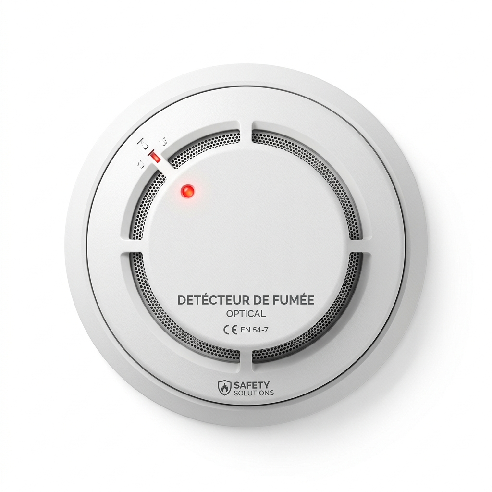
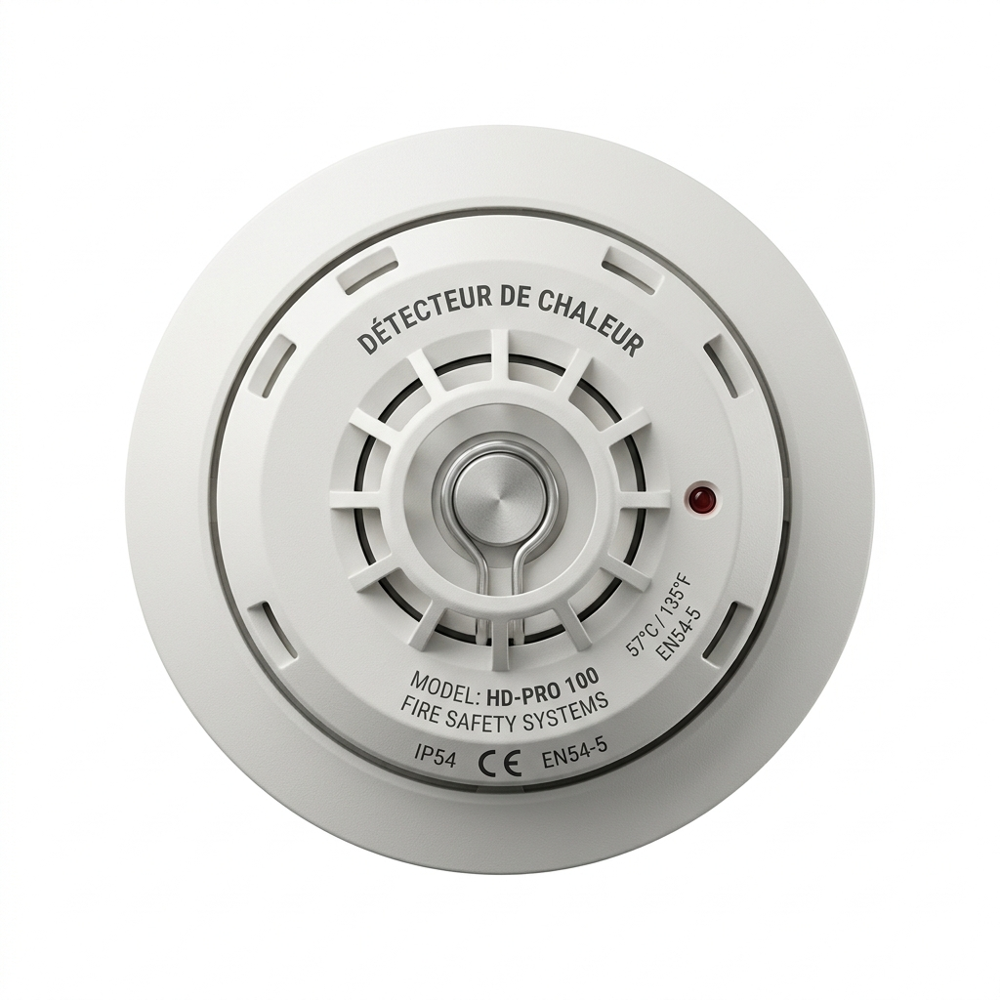
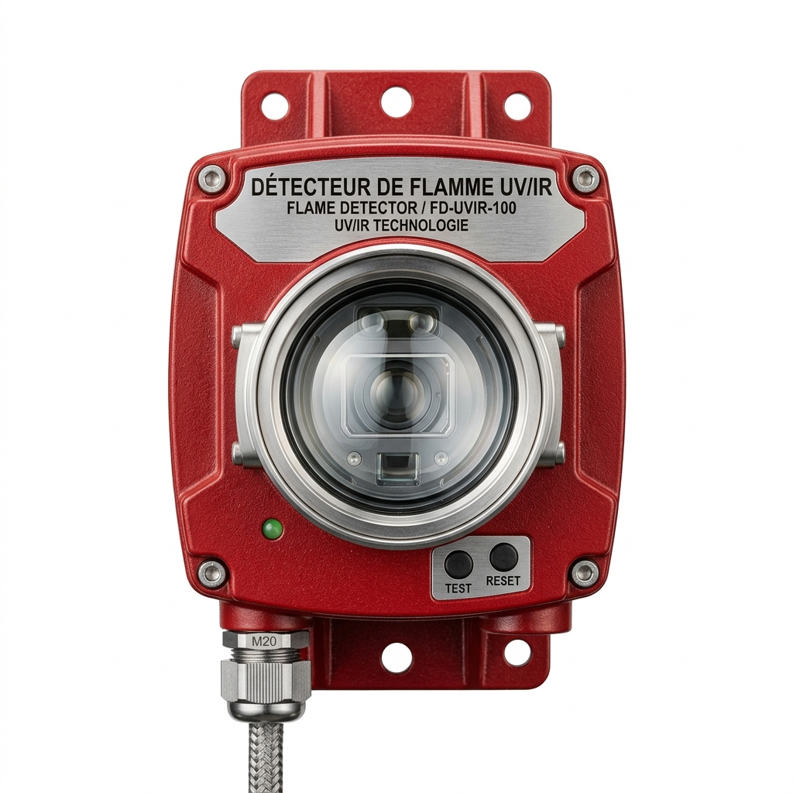
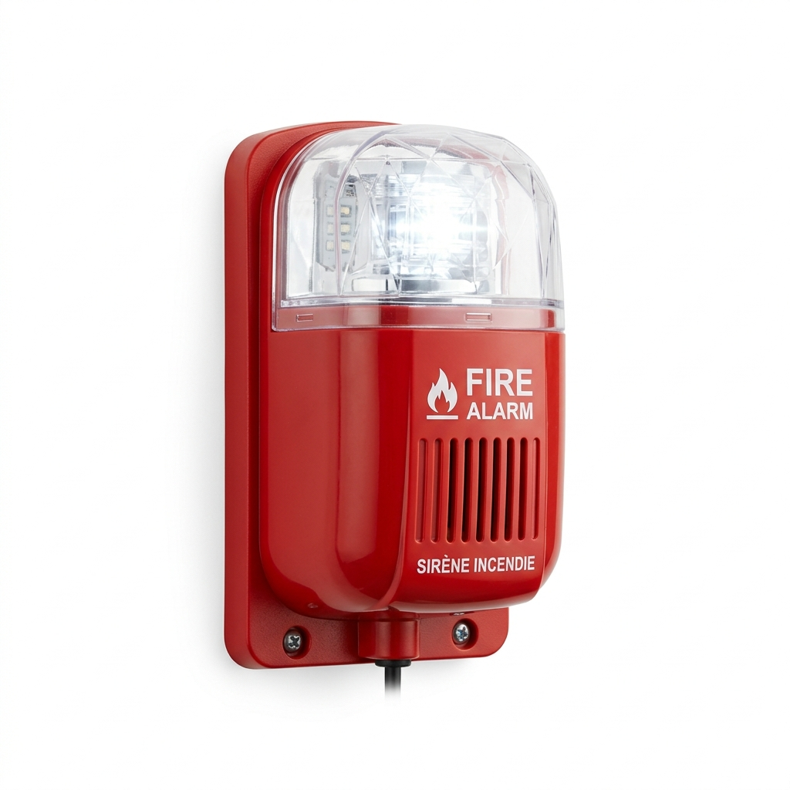
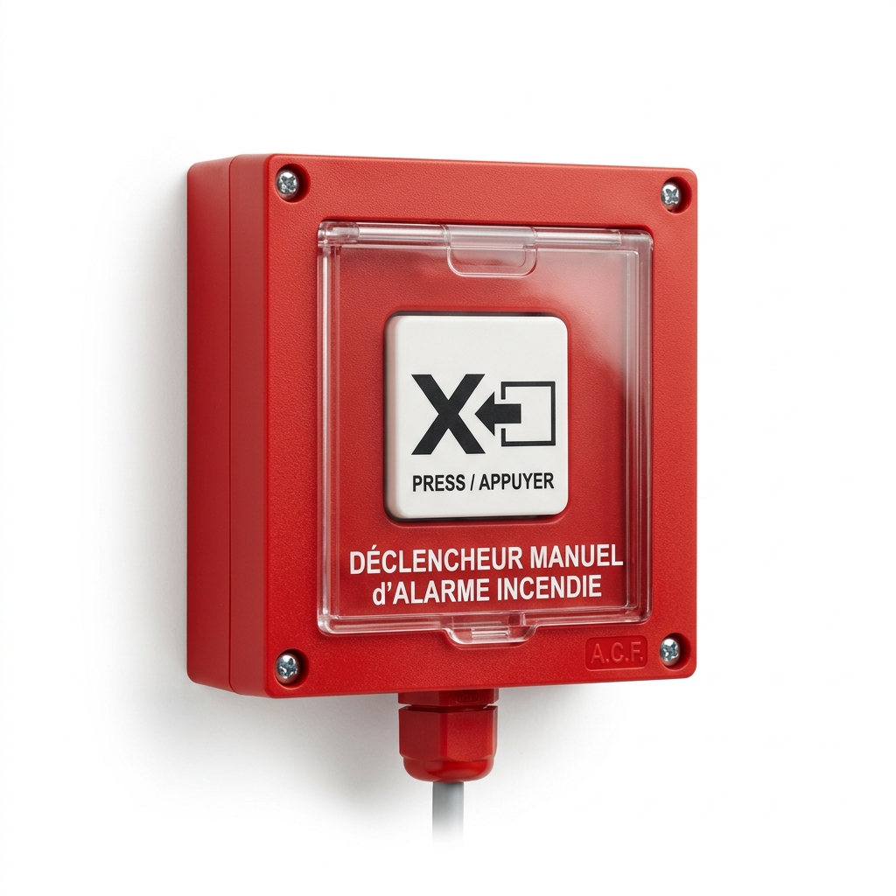
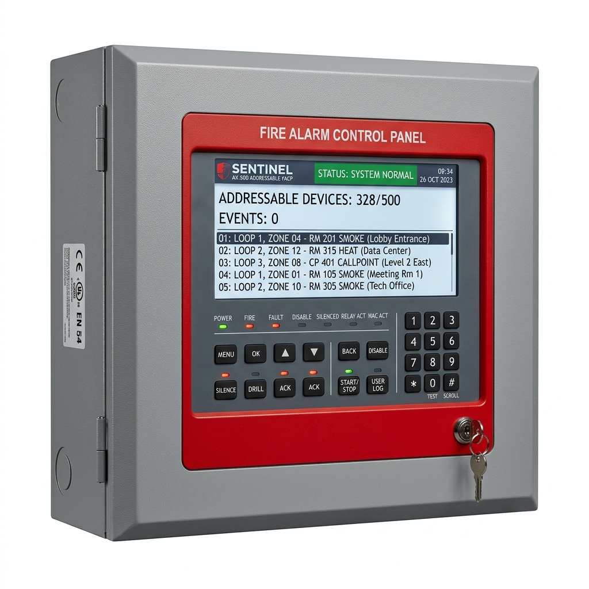
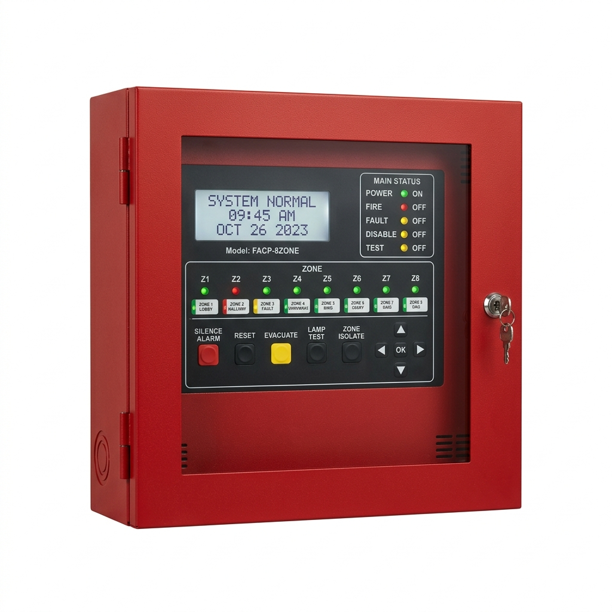
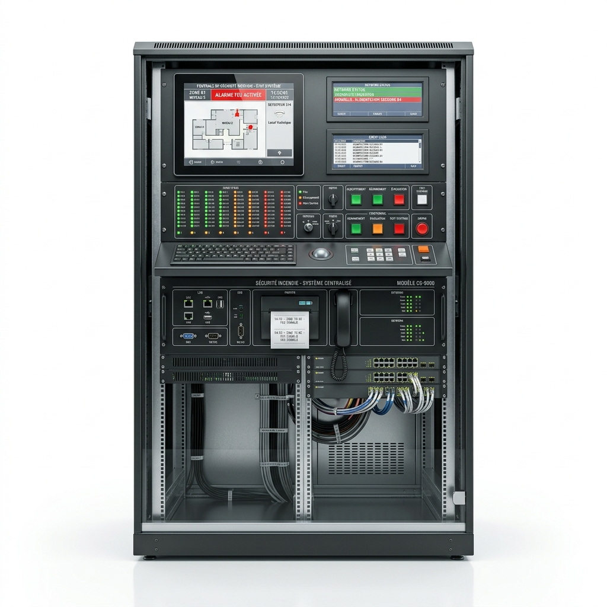

Découvrez notre gamme complète d'équipements certifiés pour la sécurité incendie, la protection individuelle et la détection de gaz. Demandez un devis instantané en ligne.


Casque de sécurité haute résistance en polycarbonate avec réglage à crémaillère, harnais textile et aération optimale. Certifié norme EN 397.

Demi-masque et masque complet de protection respiratoire à haut confort avec filtres à baïonnette interchangeables contre gaz, vapeurs et poussières (norme EN 140 / EN 136).

Lunettes de protection oculaire avec oculaires anti-rayures, traitement anti-buée extrême et protection UV à 100%. Conforme à la norme EN 166.

Serre-tête de protection auditive haute performance (SNR 31dB) pour environnements industriels à fort niveau sonore, arceau matelassé confortable. Norme EN 352-1.

Harnais de sécurité 2 points d'ancrage (dorsal et sternal) pour travaux en hauteur, avec sangles sous-fessières élastiques et boucles rapides de fermeture. Norme EN 361.
.png)
Longe avec absorbeur d'énergie intégré pour l'arrêt sécurisé des chutes. Équipée de connecteurs haute résistance. Conforme à la norme EN 355.

Mousqueton et connecteur de sécurité à verrouillage automatique ou manuel pour systèmes antichute. Haute résistance, norme EN 362.

Cagoule de soudage automatique à cristaux liquides (teinte variable DIN 9-13) protégeant les yeux et le visage contre l'arc électrique et les projections de soudage. Norme EN 379.

Bottes et chaussures de protection basses et hautes avec embout composite 200J, semelle anti-perforation non métallique et tige hydrofuge. Norme EN ISO 20345 S3.

Bottes professionnelles renforcées pour les milieux exigeants, offrant une excellente protection contre les chocs et les glissades. Norme EN ISO 20345.

Couvre-chaussures de sécurité jetables ou réutilisables, idéals pour les environnements propres, les laboratoires et les visites d'usines. Protègent les sols et les chaussures.

Cuissardes de sécurité étanches, idéales pour les travaux en milieux très humides, inondés ou agricoles. Offrent une excellente protection jusqu'en haut des cuisses.

Bottes de sécurité étanches en PVC ou PU avec embout de protection et semelle anti-perforation. Parfaites pour les chantiers humides et l'industrie lourde. Norme EN ISO 20345 S5.

Large gamme de gants de manutention fine ou lourde : protection anti-coupure, chimique, thermique et gants isolants électricien. Normes EN 388 / EN 374 / EN 407.

Gants de protection thermique conçus pour résister aux hautes températures. Idéals pour la manipulation de pièces chaudes en toute sécurité. Conformes à la norme EN 407.

Gants tricotés haute résistance pour une protection optimale contre les risques mécaniques et les coupures. Idéals pour les travaux de précision. Conformes à la norme EN 388.

Gants isolants conçus pour maintenir les mains au chaud tout en offrant une bonne préhension dans les environnements froids ou en extérieur. Conformes à la norme EN 511.

Gants de protection avec coussinets absorbants pour réduire la transmission des vibrations lors de l'utilisation d'outils mécaniques. Conformes à la norme EN ISO 10819.

Gants étanches haute protection contre les produits chimiques agressifs et micro-organismes. Parfaits pour l'industrie chimique et les laboratoires. Conformes à la norme EN 374.

Gants en cuir épais avec manchette longue, conçus pour protéger contre les projections de métal fondu et la chaleur radiante lors des travaux de soudure. Conformes aux normes EN 407 et EN 12477.

Gants enduits PVC offrant une excellente résistance à l'abrasion et une imperméabilité aux huiles, graisses et hydrocarbures. Idéals pour les travaux lourds en milieu humide.

Gants à usage unique en nitrile ou latex, idéals pour le secteur médical, agroalimentaire ou pour les travaux nécessitant une hygiène stricte et une grande dextérité.

Gants isolants en latex spécialement conçus pour les travaux sous tension. Ils offrent une haute protection électrique adaptée à différentes classes de tension (norme EN 60903).

Combinaisons double fermeture et tenues de travail complètes offrant une protection optimale contre les salissures et les risques mineurs. Idéales pour l'industrie et la mécanique.

Gilets et vêtements de signalisation à bandes réfléchissantes pour assurer une visibilité maximale de jour comme de nuit. Conformes à la norme EN ISO 20471.

Vêtements imperméables, ensembles de pluie et coupe-vents robustes pour une protection complète contre les intempéries sur les chantiers. Conformes à la norme EN 343.

Blouses d'atelier, médicales ou de laboratoire offrant confort et protection au quotidien. Faciles d'entretien et résistantes aux tâches courantes.

Pantalons multipoches robustes et ergonomiques, renforcés aux genoux pour résister à l'usure sur les chantiers. Confortables et fonctionnels pour les professionnels.

Tabliers de protection étanches en PVC lourd ou léger. Offrent une excellente protection contre les liquides, les produits chimiques et les salissures en milieu industriel ou agroalimentaire.

Vestes de travail multipoches et blousons professionnels. Offrent robustesse, liberté de mouvement et protection contre le froid ou les intempéries sur tous vos chantiers.

Ensembles complets de vêtements professionnels (vestes et pantalons assortis). Conception ergonomique, tissu résistant à l'abrasion et multipoches pour un confort optimal.

Ensembles de pluie étanches, coupe-vents et tenues de protection complètes contre les intempéries. Assurent de rester au sec tout en conservant une grande liberté d'action.

Détecteur portable pour la surveillance continue de 1 à 4 gaz (gaz combustibles LEL, O2, CO, H2S). Capteurs haute sensibilité avec alarmes visuelle, sonore et vibratoire.

Détecteur personnel ultra-robuste et sans maintenance pour surveiller de manière fiable un gaz toxique spécifique (O2, CO, H2S, SO2, CO2). Alarmes à 360° et enregistreur de données.

Transmetteur fixe industriel pour la surveillance continue des gaz toxiques ou inflammables. Sortie 4-20 mA avec relais intégrés pour asservissement de ventilations ou sirènes.

Balise de détection de zone multi-gaz pour la sécurisation temporaire de chantiers ou d'espaces confinés. Alarme visuelle et sonore très puissante avec grande autonomie.

Cellules et capteurs de rechange haute précision pour détecteurs fixes et portables. Compatibles avec une large gamme de gaz toxiques, explosibles ou asphyxiants.

Stations d'étalonnage automatiques pour vérifier, calibrer et recharger vos détecteurs de gaz portables rapidement et en toute sécurité avant chaque utilisation.

Large gamme d'accessoires pour détecteurs : pompes d'échantillonnage, sondes de prélèvement, filtres, batteries de rechange et chargeurs pour vos équipements.

Système éprouvé de mesure ponctuelle et rapide de gaz avec pompe de prélèvement manuelle Accuro pour plus de 500 substances chimiques et gaz toxiques.

Extincteurs à eau pulvérisée, idéals pour les feux de classe A (matériaux solides tels que le bois, le papier, le tissu). Simples et efficaces.

Extincteurs à eau pulvérisée avec additif, redoutablement efficaces contre les feux de classe A (solides) et B (liquides inflammables). Parfaits pour les environnements mixtes.

Extincteurs à poudre polyvalente ABC. Le plus polyvalent du marché, il étouffe les flammes et est efficace sur presque tous les types de feux de départ.

Extincteurs à poudre spécifiquement conçus pour les feux de liquides ou de solides liquéfiables (classe B) et de gaz (classe C). Idéals pour les hydrocarbures et produits chimiques.

Extincteurs au dioxyde de carbone (CO2). Efficaces contre les feux d'origine électrique et les liquides inflammables. Agissent par étouffement et refroidissement sans laisser de résidus.

Extincteurs à mousse, particulièrement recommandés pour les feux de classe B (liquides inflammables). La mousse isole les vapeurs inflammables et empêche toute reprise du feu.

Extincteurs à poudre spéciale dédiés exclusivement aux feux de métaux (aluminium, magnésium, sodium, etc.). Indispensables pour les environnements industriels spécifiques.

Extincteurs à agent chimique humide, spécialement conçus pour les feux liés aux auxiliaires de cuisson (huiles et graisses végétales ou animales). Indispensables en restauration.

RIA industriel complet DN 25 ou DN 33 avec dévidoir à alimentation axiale, tuyau semi-rigide de 30m et diffuseur à jet réglable jet conique/jet bâton. Conforme EN 671-1.

Tuyaux plats de refoulement en polyester avec raccords symétriques Guillemin et lances à débit réglable (LDV) pour l'extinction professionnelle. Conforme EN 14540.

Détecte efficacement les particules de fumée dès le début d'un incendie. Indispensable pour maisons, bureaux et hôtels.

Détecte une hausse rapide de température. Particulièrement utilisé dans les cuisines, garages et milieux industriels.

Détecte instantanément les flammes grâce aux rayons UV/IR. Parfait pour les zones industrielles et chimiques sensibles.

Émet une alerte sonore très puissante pour l'évacuation, pouvant être combinée avec un signal lumineux (flash).

Déclencheur manuel rouge à bouton poussoir. Permet à toute personne témoin d'activer immédiatement l'alarme générale.

Chaque détecteur possède une adresse unique. Permet au système de localiser exactement et instantanément le départ de feu.

Fonctionne par découpage en zones (boucles). Moins précise que l'adressable mais constitue une solution très économique.

Le cerveau de l'installation de sécurité. Elle reçoit les alertes des capteurs et contrôle l'ensemble du système d'évacuation.

Haut-parleur de sécurité diffusant des messages vocaux pré-enregistrés pour fluidifier l'évacuation de grands bâtiments.

Système moderne qui envoie des alertes directement sur votre téléphone. Entièrement compatible avec les systèmes domotiques.

Bouches et poteaux d'incendie extérieurs normalisés pour l'alimentation des engins de lutte contre l'incendie. Construction robuste en fonte avec raccords conformes.

Tenues d'intervention professionnelles ignifugées, casques F1/F2, bottes de feu, ceinturons et accessoires de protection individuelle pour les équipes de première et seconde intervention.

Émulseurs synthétiques et fluorosynthétiques (AFFF, AR-AFFF) haute performance pour la production de mousse bas, moyen et haut foisonnement contre les feux d'hydrocarbures.

Extincteurs sur roues de grande capacité (50kg et plus) à poudre, eau ou CO2. Idéals pour la protection de grands espaces de stockage, aéroports et sites pétrochimiques.

Coffret médical de premiers soins complet, équipé selon les exigences de la médecine du travail pour soigner les blessures courantes en milieu industriel et tertiaire.

Défibrillateur cardiaque d'urgence avec instructions vocales pas à pas et capteur d'aide au massage cardiaque, utilisable par tout public. Conforme normes CE et DAE.

Station d'urgence autonome ou raccordée en acier inoxydable pour la décontamination rapide du corps et des yeux en cas de projection chimique. Norme EN 15154.

Panneaux d'obligation, de danger, d'évacuation et de lutte contre l'incendie (NF ISO 7010). Cônes de chantier, rubans de balisage haute visibilité.

Cadenas diélectriques, moraillons de consignation multiple, dispositifs de verrouillage de vannes ou disjoncteurs et étiquettes de signalisation. Procédure Lockout/Tagout.
Découvrez en détail les technologies et équipements qui composent nos systèmes de sécurité incendie de pointe.
Types de câbles utilisés dans les systèmes incendie :
Système intelligent où chaque équipement possède une adresse unique. Idéal pour les grands bâtiments (localisation précise du feu, maintenance simplifiée).
Système organisé par zones. Plus économique et simple à installer, parfaitement adapté aux petits bâtiments.
Types d’alarmes sonores et visuelles pour l'avertissement et l'évacuation :
Boîtiers de sécurité permettant de déclencher l’alarme générale manuellement :
Le cerveau du système de sécurité. Reçoit les alertes, gère les sirènes et l'évacuation automatique.

Chez GLOBAL CUSTOMER SYNERGY, nous proposons une gamme complète de solutions de protection incendie, incluant :
Nos systèmes d'arroseurs automatiques peuvent varier en fonction de vos besoins :
Nous fournissons également une sélection d'extincteurs de différents types.

Notre équipe de professionnels vous aide à choisir l'équipement de prévention incendie adapté à vos besoins et à votre budget. Nous offrons une gamme d'extincteurs, de tuyaux d'incendie, et d'accessoires garantissant une protection optimale.
Tous nos produits s'accompagnent d'un programme de maintenance pour assurer leur efficacité à long terme, et nos spécialistes sont là pour vous aider à trouver la solution la plus appropriée à votre situation.

Nous concevons et déployons des systèmes d'alarme incendie et d'extinction automatique à la pointe de la technologie pour assurer la protection optimale de vos installations.
Chaque système est pensé sur-mesure pour s'adapter à la configuration de vos locaux, garantissant une détection rapide et fiable face à tout début d'incendie.

Chez GLOBAL CUSTOMER SYNERGY, nous proposons une formation complète en prévention d'incendie, couvrant tous les aspects essentiels de la sécurité. Notre programme est conçu pour former efficacement votre personnel et vos intervenants, assurant ainsi une préparation optimale face aux risques d'incendie.

Facilitez vos transactions commerciales grâce à notre expertise et notre réseau étendu de partenaires.
Notre service de courtage d'affaires vous accompagne dans le développement stratégique de votre entreprise en vous mettant en relation avec les bons acteurs économiques. Confiez-nous vos recherches de partenariats, nous nous occupons de trouver les meilleures opportunités pour vous.